RDFS
Volume Verification failed for sample.
Complaint Description
Reagent Dispense Sample Failure —RDV indicated a failure during dispense of Sample. There is an RDV error type message associated with each dispense failure; either 2, 64, 128, or a sum of any of these (e.g. error type 192 means error type 64 and error type 128 both occurred).
Error type 2— Maximum pressure threshold exceeded
Error type 64— Minimum mean pressure threshold not met
Error type 128— Minimum pressure down time threshold not met
Technical Support
Questions to Ask Customer
- RDFS on samples or controls? If on samples only: which sample type?
- Only in one particular assay or multiple assays?
- If in HPV run or on controls: check curves for a cap venting issue
- Which tips are on the instrument? (Validated or alternative, document Ref number + lot.)
- Request logs for review.
Log Review
- 1-2% is considered normal (likely viscous samples/precipitate in urine)
- Rare in HPV runs since Thinprep samples are usually not viscous
- If >2% RDFS, or RDFS in HPV runs or on controls, check curves
- Check the following curves: cLLD TCR, Sample aspiration and dispense curves
- Sometimes invalids have both VVFS/RDFS. See more curves under VVFS.
Example Curves
- RDFS due to viscous sample:
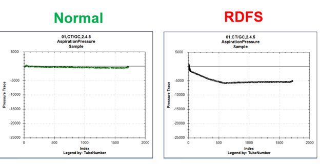
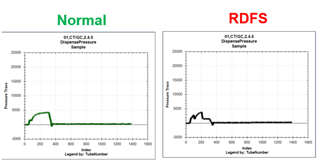
-
RDFS due to cap venting can be caused by:
-
Sample rack clip broken – sample is moving up.
-
Sample not pushed all the way down in the rack.
-
Cap foil delamination. Have customer check the shape of the piercing hole. It should be square or ‘D’ shaped, not perfectly round.
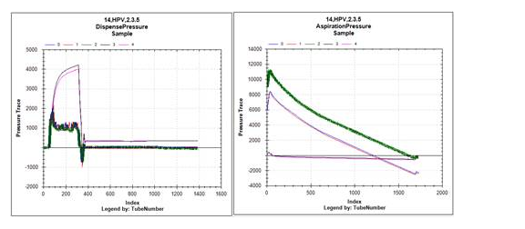
-
RDFS/VVFS Pierceable Cap Left on the Controls
Resolution
For Covid uncapped workflows, the controls (which have pierceable caps) must be uncapped. Customers at times will forget this, since the cap is pierceable.
If the RDFS occurred on a Covid control, ask the customer which workflow they are running.
Example
SarsCov2 WL 000877-20201209-23 Version: 3.1.11.5 (For Emergency Use Authorization) ML: 286020 Exp: 07/15/2021 TCR: 03254
SarsCov2 WL 000877-20201209-28 Version: 3.1.11.5 (For Emergency Use Authorization) ML: 286020 Exp: 07/15/2021 TCR: 03254
Both runs failed due to RDFS and VVFS on both positive and negative controls.
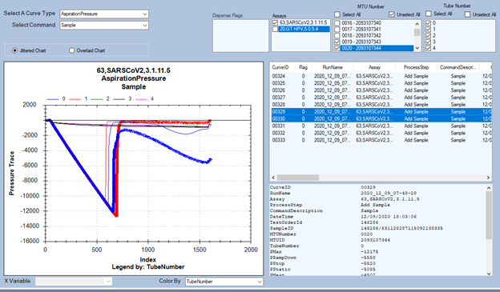
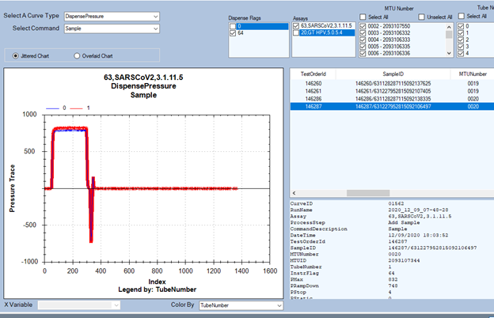
Confirmed cap is on using C-LLD and LLDValues:
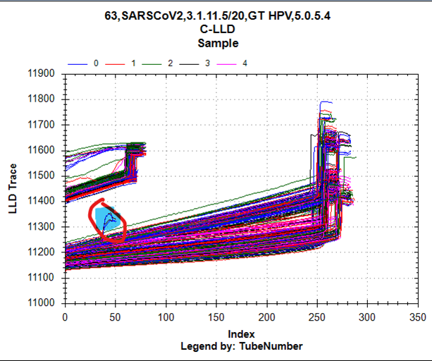
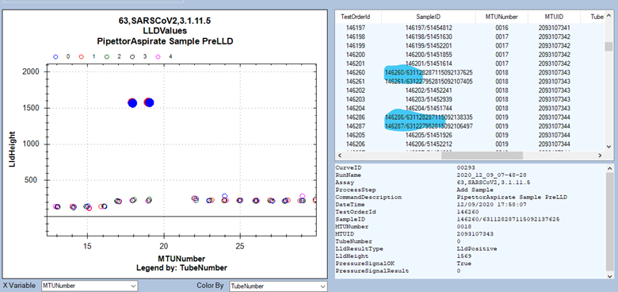
Field Service
Precipitate in Sample
Resolution
Remove the mucous, then transfer to a new sample tube and retest the sample.
Test
Verify the sample does not have a mucous cap, or cotton pile in the tube.
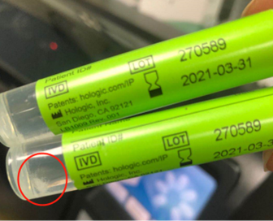
Foamy Reagent
Typically error type 128.
Resolution
Pop the bubbles
Verify the customer's reagent preparation workflow.
Test
Use CurveTrend or the Dashboard tool to check the dispense curves.
Pipettor Tips Damaged or Wrong Type
Typically error type 2.
Resolution
Fix the hardware obstruction
Fix the hardware obstruction (reseat sample bay lid).
Use the correct tips (1mL Tecan capacitive with filter).
Test
Visually verify damage to Pipettor tips.
Determine where the obstruction occurs
Verify tips are not wrong type.
Pipettor Tips Lack Filter
Intermittent but persistent error type 64.
Resolution
Use the correct tips (1mL Tecan capacitive with filter).
Test
Visually verify the pipettor tips have the white filter.
Fluid Viscosity
Resolution
Check to see if the sample was properly stored.
Check to be sure the reagent type matches the assay.
Check to be sure the Customer properly reconstituted the reagent.
Check sample quality for mucoidal particles or particulate matter.
Test
Use CurveTrend or the Dashboard tool to check the aspiration and the dispense pressure curves.
Compare the dispense pressure against a good dispense curve (un-flagged dispense event).
Check the reagent for uniformity.
No Liquid Aspirated
Resolution
Replace the reagent with a new reagent kit (possibly below the volume requirements).
Re-teach the Pipettor.
Replace the Pipettor.
Test
Use CurveTrend or the Dashboard tool to check the cLLD, Aspiration and dispense curves.
Verify the LLD height.
Leaky Pipettor
Resolution
Tighten the Pipettor Diti.
Replace the Pipettor.
Test
Check the Reagent Bay cover for drips.
Check the Load Station for drips.
Use CurveTrend or the Dashboard tool to check aspiration curves.
Check to see if the Pipettor DiTi is loose.
Perform a pressure integrity test using the Service Software.
VVFS Due to Cap Sealing Around Pipettor Tip
If the Cap seals around the Pipettor Tip during aspiration, this will cause a pressure spike during aspiration, and the incorrect volume of sample will be aspirated. This will lead to a short shot of sample being dispensed. This can be caused by:
- The customer not pushing the sample all the way down in the tube (most likely).
- Wet cotton pile (likely if multiple reps taken from the same tube).
- Poor caps (rare). Note- this is not a frequent issue but captured here to raise awareness that it is possible.
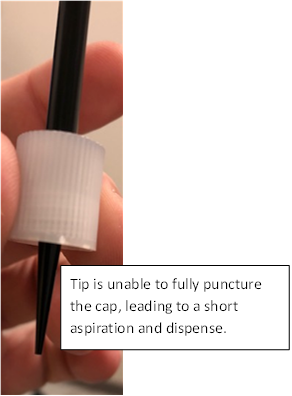
Resolution
Observe the Sample Aspiration and Dispense Curves.
Plot the aspiration curves, and find the curve with the elevated pressure trace. Note the Test Order ID and Sample ID for that curve.
Sample Aspiration Pressure Curves
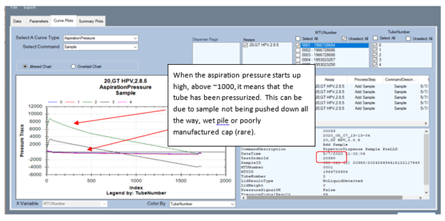
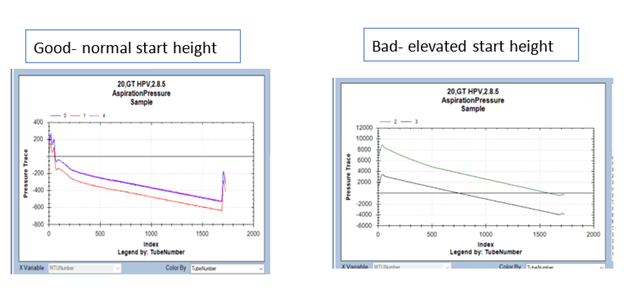
Sample Dispense Pressure Curves
Plot the dispense curves, and find the corresponding to the Test Order ID noted in the first step.
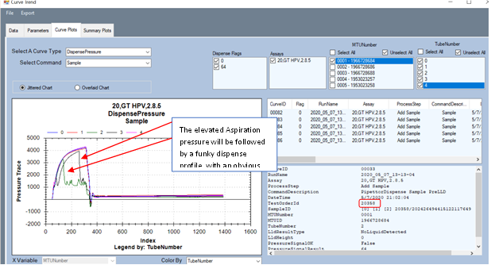
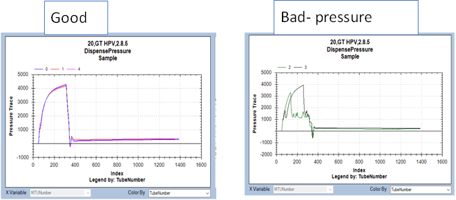
Test
Compare the dispense pressure against a good dispense curve (un-flagged dispense event).


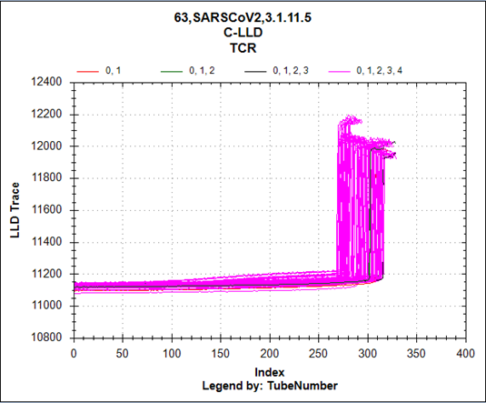
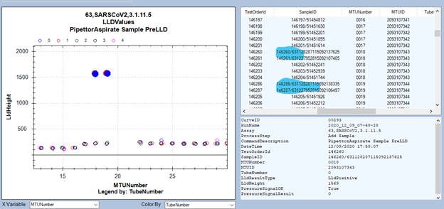
 button at the top of the page to send feedback, comments, or change requests.
button at the top of the page to send feedback, comments, or change requests.